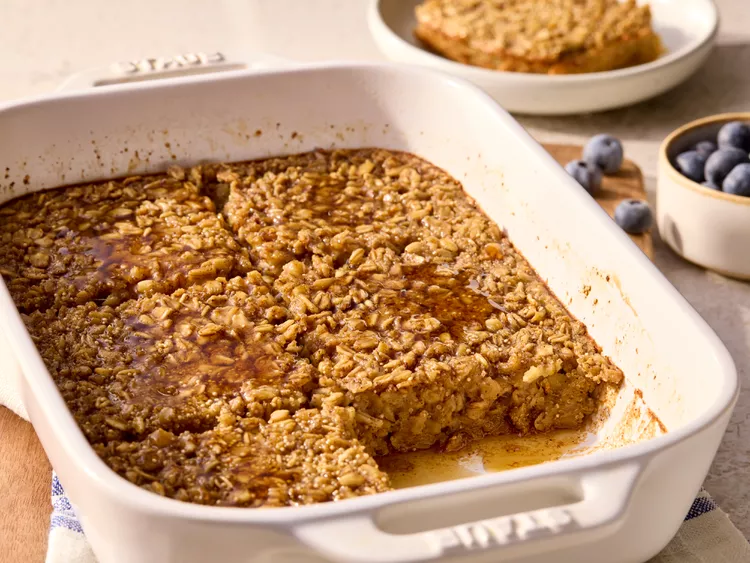

Overnight Baked Oatmeal Recipe
Home

Description
This is a picture of overnight baked oatmeal which is a healthy form of breakfast that can be consumed daily!
This dish is easy and quick to make for our everyday mornings!
Ingredients
- Eggs
- Milk
- Maple syrup
- Sugar
- Vanilla extract
- Ground cinnamon
- Salt
- Rolled Oats
- Quinoa (optional)
Steps
- Gather all ingredients
- Grease the baking dish
- Put eggs, milk, maple syrup, brown sugar, vanilla, cinnamon, and salt in the dish and whisk
- Stir in the oats
- Cover and chill for at least overnight or up to 3 days
- Preheat the oven to 350degrees F (180 degrees C), uncover the foil and stir to re-incorporate the ingredients
- Baked, uncovered, until it is golden brown and the center is set, 44 to 55 minutes
- Rest for 10 minutes before serving. Serve warm.